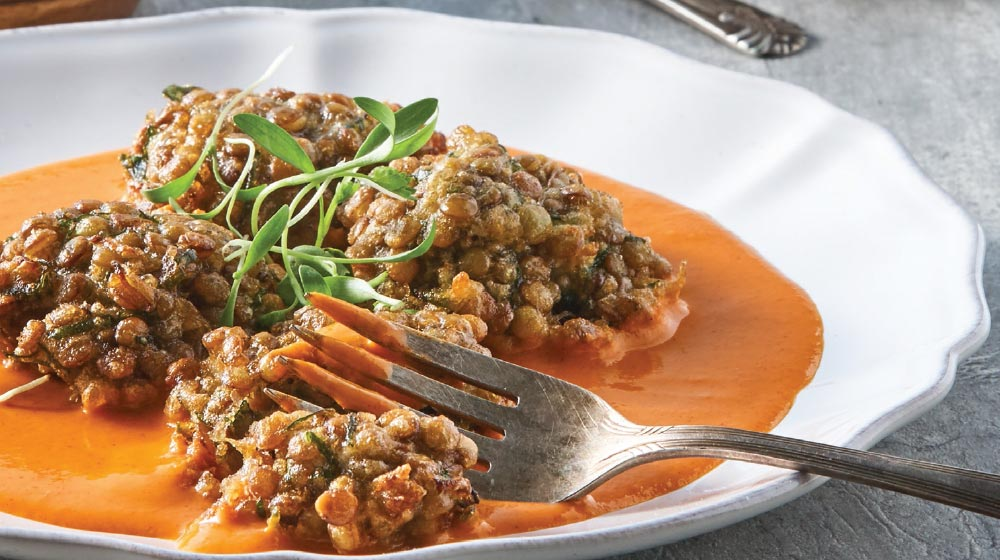

What food recipes are the healthiest?
Salad
They are perfect for including basic food groups, as well as being very light. The best thing is that you can create your combinations to make them delicious. Of course, remember that its ingredients must be balanced. You can include salads 2 to 3 times a week, as long as you do not repeat all the ingredients. The green leaves are ideal to prepare them: use quelites or radish or beet leaves, which are healthy and inexpensive.
Broth and soups

These provide great nutrients and not only that: they are very abundant and you can also combine them in a very delicious way with other ingredients. One of the most recommended broths to increase defenses is chicken broth that, combined with vegetables, will become a very healthy source of food. Accompany it with tortillas for a more complete meal.
Stews
These are typical, very delicious, abundant and you can also prepare them in very healthy ways. Also, many include all three food groups You can prepare many delicious combinations, such as nopales with steak, minced meat with vegetables, stewed chicken and much more. Remember that it is important to include fruits and vegetables daily, preferably raw.
Learn more